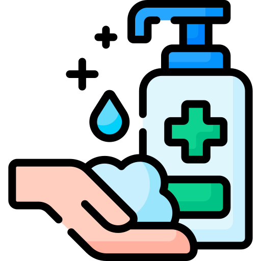
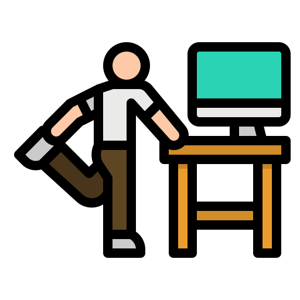
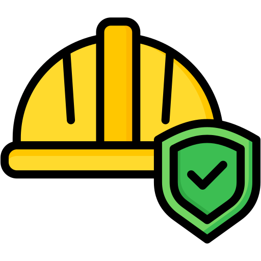

Riesgos Laborales en un Hospital
Cuando comenzamos a profundizar en los diferentes tipos de riesgos que podemos apreciar en los hospitales, vemos que son muy variados,
desde riesgos higiénicos hasta riesgos ergonómicos o psicosociales.
Tipos de Riesgos:
Riesgos higiénicos | Riesgos ergonómicos | Riesgos de seguridad | Riesgos psicosociales
1.Riesgos higiénicos: 
Son aquellos que están derivados de la exposición a algún agente contaminante en el ambiente de trabajo.
Riesgos Laborales
Medídas de prevención
Exposición a agentes biológicos debido al contacto directo con enfermos.
Esterilización y desinfección de personas, instrumentales y superficies.
Riesgo de entrar en contacto con sustancias tóxicas o nocivas.
Utilizar equipos de protección.
Vibraciones, ruidos muy elevados, falta de luz, radiaciones…
Colocar focos de forma que no provoquen deslumbramientos, utilizar protecciones para el ruido y realizar mediciones periódicamente.
2.Riesgos ergonómicos: 
Estos riesgos son aquellos que pueden provocar trastornos musculoesqueléticos en los trabajadores sanitarios, son derivados de realizar posturas forzadas o movimientos repetitivos durante unos periodos largos de tiempo.
Riesgos Laborales
Medídas de prevención
Movimientos muy repetitivos.
Disponer de máquinas y métodos adecuados para evitar estas tareas.
Manipulación de cargas.
Cuidar la higiene postural y utilizar máquinas siempre que sea posible.
Posturas forzadas.
Evitar posturas incómodas y respetar los tiempos para descansar.
3.Riesgos de seguridad: 
Son unos de los más perceptibles, aquellos que son conocidos desde hace mucho tiempo y en los que continuamente se intenta trabajar para que no ocurran.
Riesgos Laborales
Medídas de prevención
Caídas al desplazarse.
Utilizar un calzado adecuado y mantener ordenadas las distintas zonas.
Caídas desde lugares elevados.
Comprobar el correcto estado del material que va a utilizarse.
Caídas de objetos por manipulación o desplome.
No sobrecargar estanterías y colocar aquellos elementos que más pesen en las zonas inferiores.
4.Riesgos psicosociales: 
Son unos de los más perceptibles, aquellos que son conocidos desde hace mucho tiempo y en los que continuamente se intenta trabajar para que no ocurran.
Estos tipos de riesgo pueden afectar a diversos sistemas del cuerpo humano, como el respiratorio, digestivo, cardiovascular…
Pueden estar producidos por diferentes razones cómo una carga elevada de trabajo o la situación personal de cada trabajador en su vida privada. Para terminar con ellos se pueden seguir diferentes medidas preventivas cómo impartir formaciones o evitar la monotonía y repetitividad.